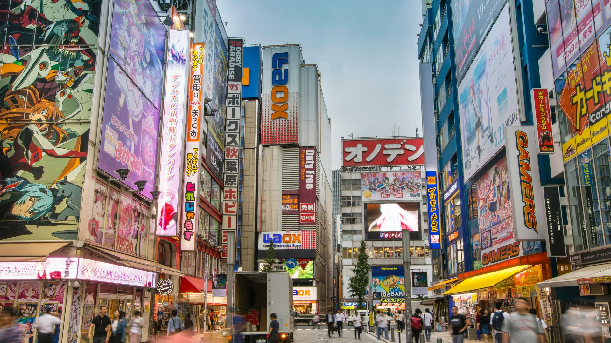
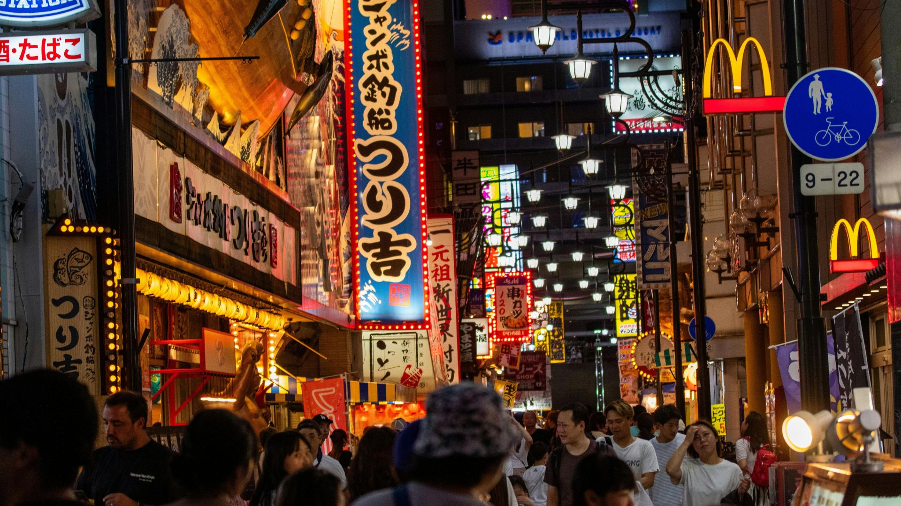
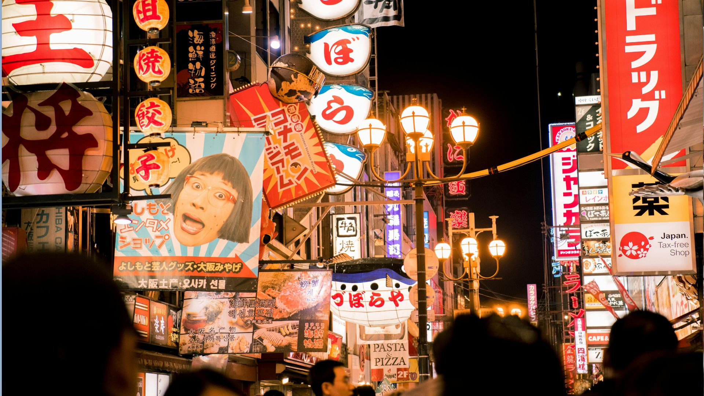

Shibuya é um dos bairros mais famosos de Tóquio e um dos centros urbanos mais movimentados do Japão. Conhecido por sua energia vibrante, grandes telões, lojas modernas e vida noturna intensa, o distrito se tornou um símbolo da cultura urbana japonesa.
Todos os dias milhares de pessoas passam pela região para trabalhar, fazer compras ou simplesmente conhecer um dos lugares mais icônicos da capital japonesa. O ponto mais famoso é o cruzamento conhecido mundialmente como Shibuya Crossing, onde centenas de pedestres atravessam a rua ao mesmo tempo em diferentes direções.
O cruzamento de Shibuya é considerado um dos cruzamentos de pedestres mais movimentados do planeta. Quando o sinal fica vermelho para os carros, todos os pedestres atravessam ao mesmo tempo, criando uma cena impressionante que virou símbolo da vida urbana japonesa.
Muitos visitantes gostam de observar o movimento a partir dos cafés e prédios ao redor do cruzamento, onde é possível ter uma visão panorâmica desse espetáculo urbano.
A estação de Shibuya é uma das mais movimentadas do Japão e funciona como um grande centro de transporte da cidade. Milhões de passageiros passam por ela todos os dias utilizando diferentes linhas de trem e metrô.
A região ao redor da estação está sempre cheia de movimento, com lojas, restaurantes, cafés e grandes telas digitais iluminando a paisagem urbana.
Um dos pontos mais famosos de Shibuya é a estátua de Hachiko, um cachorro que se tornou símbolo de lealdade no Japão. A história conta que ele esperava seu dono todos os dias na estação, mesmo após a morte do professor que o criava.
Hoje a estátua é um dos pontos de encontro mais conhecidos de Tóquio e uma parada obrigatória para turistas que visitam o bairro.
Shibuya também é um paraíso para quem gosta de fazer compras. O bairro possui inúmeros centros comerciais, lojas de moda, eletrônicos e marcas internacionais.
A região é especialmente popular entre jovens e turistas que querem conhecer as últimas tendências da moda e da cultura pop japonesa.
Quando a noite chega, Shibuya se transforma em um dos centros de entretenimento mais animados de Tóquio. A área possui uma grande variedade de bares, restaurantes, karaokês e casas noturnas.
A atmosfera noturna da região atrai tanto moradores quanto visitantes que querem experimentar um pouco da vida noturna japonesa.
Visitar Shibuya é uma experiência única para quem quer sentir a energia de uma das cidades mais modernas do mundo. O contraste entre tecnologia, movimento constante e cultura urbana transforma o bairro em um dos lugares mais fascinantes do Japão.



Localizada no coração de Shibuya, em Tóquio, esta é uma das áreas mais movimentadas e famosas do Japão. Conhecida pelo icônico cruzamento de pedestres, lojas, restaurantes e vida noturna intensa, Shibuya é um ponto de encontro popular para moradores e turistas que querem sentir a energia moderna da cidade.
Última atualização: Maio de 2026
↑ ↑